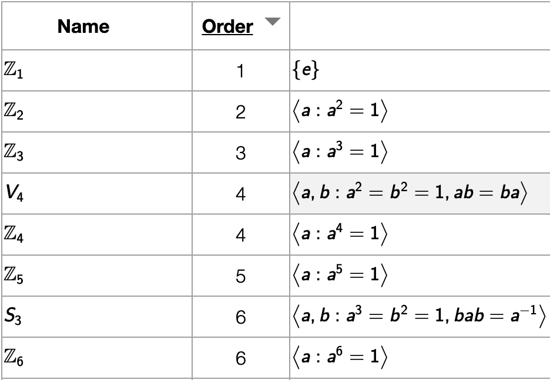

This page documents the main window of the Group Explorer web application and from which all other page are opened.
Data in the group table

Each row in the table shown in the main Group Explorer page represents a group. By default, the following columns are visible (in this order) when Group Explorer has opened:
- Name - the symbolic name of the group, as shown above
- Order
- Definition
- Cayley Diagram
- Multiplication table
- Object of symmetry
- Cycle graph
To learn more about any group in the table, simply click its name. This opens its Group Info page, which contains everything Group Explorer knows about the group and is the launchpad for exploring the group. To ask for explanation about the contents of an individual cell in the main group page, click the heading of that column, which is a link to the help for that topic.
The first time you visit the Group Explorer main page, it may take some time to load all the groups in the library. Future times that you visit the page, this should be faster, because the application stores some of the data in your browser so that it can be accessed more quickly in the future.
Sorting the table
You can sort the table by group name or order; simply click the column heading cell. (The heading for the Order column is also a link to the help on group order; click outside the word “Order” to sort by that column.)
Menu (top right)
The following icons appear on the top right of the main page. Each is addressed separately, below.

Home
The first icon (the house) is a link to the main Group Explorer website. That is, it will take you out of the app itself and back to the home page of the entire project.
Sheets
The second icon (the sheet of paper) takes you to a blank sheet, into which you can insert visualizations of any groups from the library and connect them with morphisms. To read more on sheets, see the sheets tutorial or the sheets reference.
Help
The third icon (the question mark) takes you to the main page of these help files.
GitHub
The rightmost icon (the GitHub logo) takes you to the source code repository from which the application and its website were built. Visit that site if you would like to see how the application was built, make suggestions for its improvement, report an error in the documentation, or get involved in improving the software as a developer.